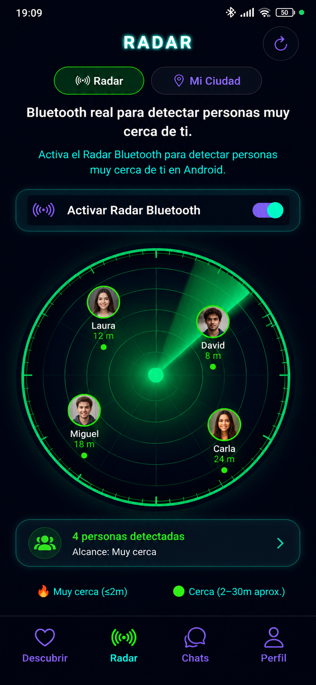
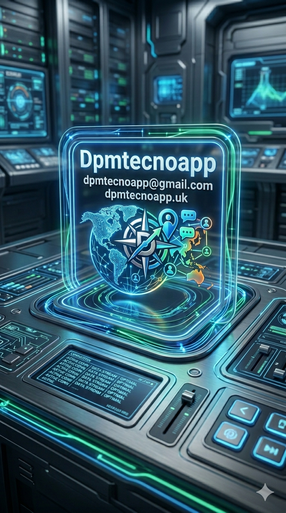
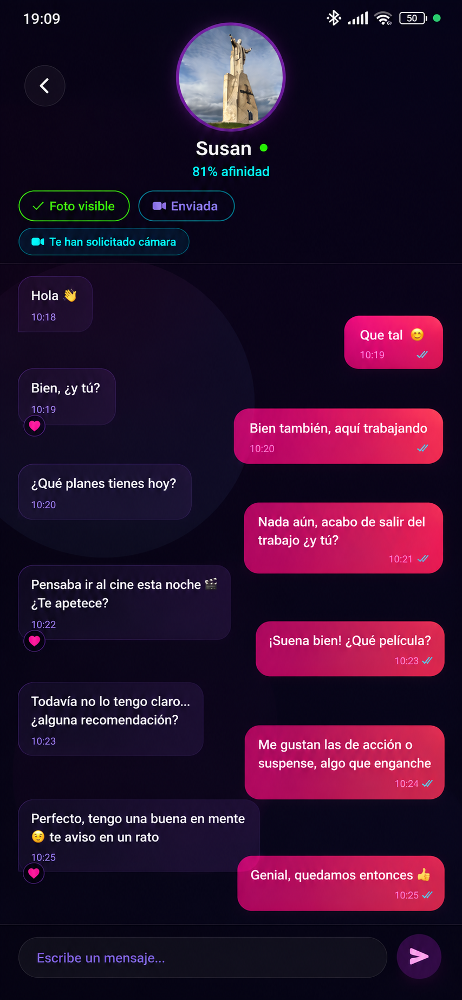
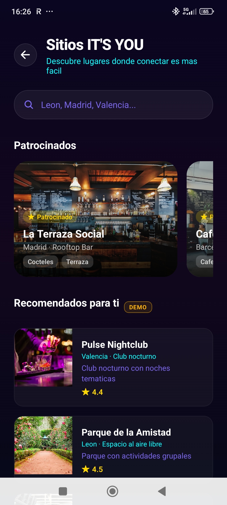
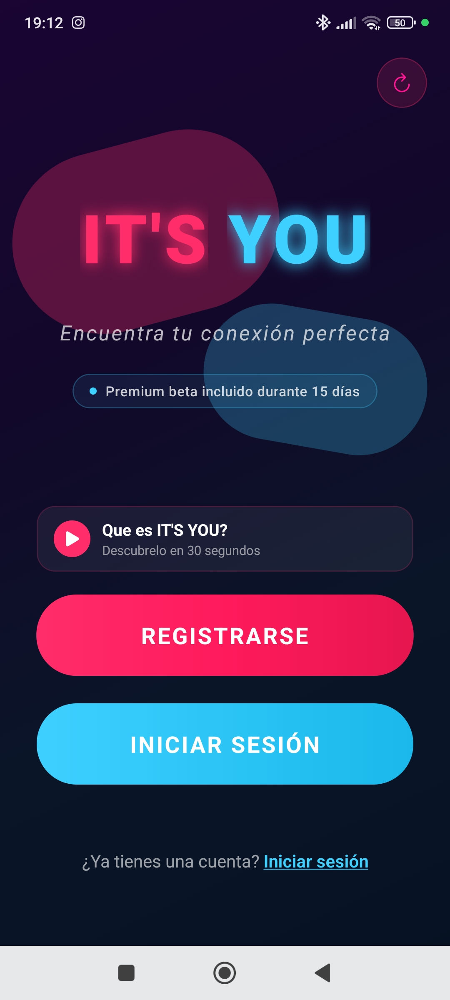

01
Radar de afinidad
La proximidad importa, pero la compatibilidad importa más. El radar combina cercanía y afinidad para ayudarte a descubrir personas que realmente encajan contigo.

DPMTecnoApp← Volver a proyectosLas apps te enseñan fotos. IT'S YOU te muestra compatibilidad real. Aquí la conexión se construye con afinidad, inteligencia artificial y proximidad inteligente.
¿QUÉ ES IT'S YOU?
Esto no va de likes ni de scroll infinito. Va de afinidad, IA y proximidad inteligente. Imagina un radar que detecta personas que encajan contigo y una IA que aprende lo que te atrae de verdad. No es magia ni casualidad: es tecnología diseñada para conectar bien.
Mientras las demás apps se quedan en fotos y likes… nosotros trabajamos con datos, IA y proximidad inteligente.
Aquí no haces scroll infinito, aquí detectas compatibilidad real.
No estamos reinventando las citas. Estamos reinventando la conexión.

La proximidad importa, pero la compatibilidad importa más. El radar combina cercanía y afinidad para ayudarte a descubrir personas que realmente encajan contigo.

Cuando hay afinidad, la conversación empieza con una base diferente. El chat prioriza privacidad, control y una conexión más natural antes de que la imagen lo condicione todo.

La conexión no termina en la pantalla. Sitios IT'S YOU reúne lugares donde conocer gente, descubrir propuestas y convertir una coincidencia digital en una experiencia real.

La app explica su propuesta desde el inicio: menos ruido, más afinidad y una experiencia diseñada para que la tecnología trabaje en segundo plano y la conexión sea lo importante.
UNA NUEVA FORMA DE CONECTAR
Compatibilidad basada en información relevante, no solo en apariencia.
La experiencia mejora a medida que entiende mejor tus preferencias.
Detecta oportunidades reales cerca de ti sin convertirlo en scroll infinito.
Tú decides cuándo mostrar más de ti y cómo avanzar en cada conexión.
VÍDEOS APLICACIÓN
Aprende a completar tu perfil para que la IA pueda conocerte mejor y ayudarte a encontrar conexiones más compatibles.
En 30 segundos: una nueva forma de entender las citas, centrada en compatibilidad real, IA y proximidad inteligente.
Menos fotos, menos ruido y más compatibilidad real. Una aplicación creada para que la tecnología ayude a encontrar conexiones que merezcan la pena.
Volver a DPMTecnoApp